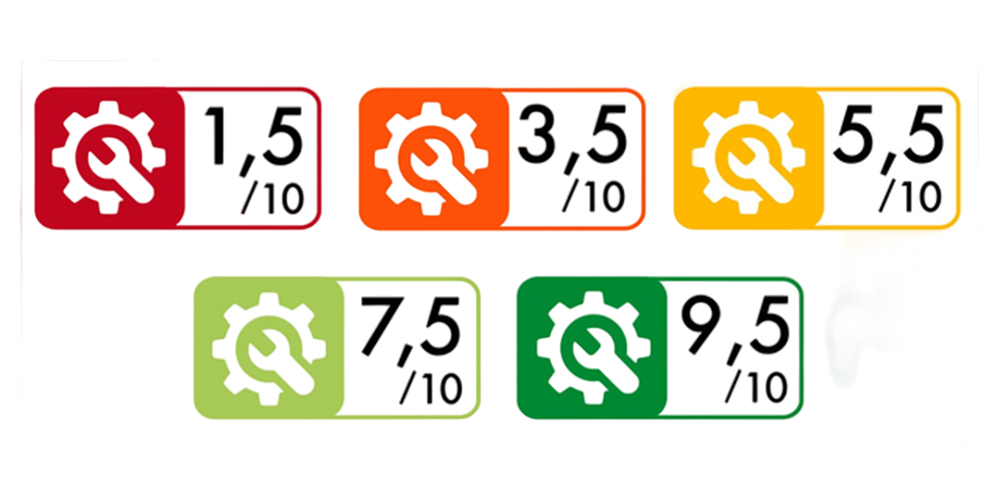

Comme vous avez tous déjà pu le remarquer, de nouveaux ordinateurs toujours plus performants sortent des usines comme Apple ou Samsung, ce sont des appareils qui ont eu un fort impact environnemental lors de leur conception puis de leur fabrication et pourtant ces nouveaux appareils trouvent toujours des acheteurs. Acheteurs qui dans de nombreux cas ont d'ors et déjà un ordinateur personnel qui fonctionne et qui pourrait être utilisé encore de nombreuses années. C'est en faisant cela que la période de vie des ordinateurs pourtant période pendant laquelle leur impact carbone est au plus bas est réduuite à très peu de temps ce qui fait de ces ordinateurs de réelle machine à polluer. C'est pour cela que si l'on parvenait à augmenter la durée de vie de nos appareils et à les utiliser jusqu'à ce qu'ils disfonctionnent réellement de nombreux problèmes serait alors réglé, en effet cela permettrait de diminuer la production de nouveaux ordinateurs ce qui réduirait considérablement la pollution.
Certains fabricants d'ordinateurs se tournent actuellement vers des manières de produire plus respectueuse de l'environnement soucieux de préservé la planète sans pour autant nous priver des appareils électronique tels que les ordinateurs. Lorsqu'un ordinateurs respecte certains critères de production, il est possible d'observer sur sa fiche technique le symbole de deux label diiférents qui d'après l'ADEME (agence de la transition écologique) sont les deux principaux.
Faire attention à l'indice de réparabilité permet d'avoir la possibilité en cas de disfonctionnement de l'appareil de le réparer plus facilement et à moindre coût dans le but de prolonger sa durée de vie comme vu précédemment. L'indice de réparabilité est signalé par l'icône suivant:

Plus cet icône est vert et proche de dix et plus l'appareil est facilement réparable. De plus privilégier le reconditionné c'est savoir que l'appareil que l'on achète à d'ors et déjà été utilisé et qu'il à été remis à neuf par des experts dans le but de prolonger sa durée de vie et donc diminuer son impact environnemental.
En effet, recycler représente de nombreuses économies sur le plan environnemental et humain, cela permet de récupérer les composants des vieux ordinateurs pour les réutiliser plutôt que d'extraire de nouveaux minerais rares dont l'extraction pollue énormément. Recycler c'est récupérer 64,2% des matériaux déjà présent dans l'appareil, c'est 149kgs de CO2 non émis, 43kgs de matières premières brutes économisées et encore 7kwh d'économisés. Le fait de pouvoir récupérer les vieux ordinateurs pourrait tout d'abord permettre à des experts de vérifier s'ils ne sont pas réparables pour les reconditionner et les revendre ensuite ou bien les recycler plus facilement pour économiser beaucoup sur de nombreux plans.